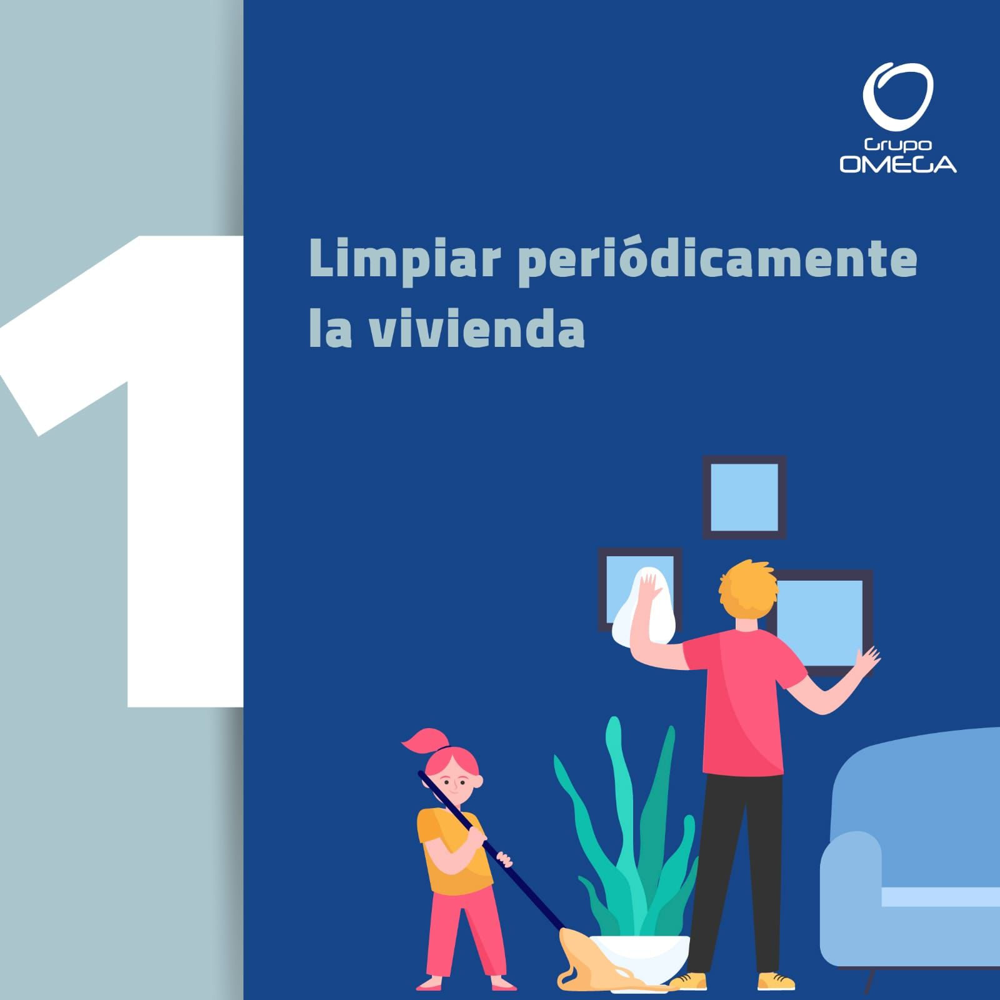
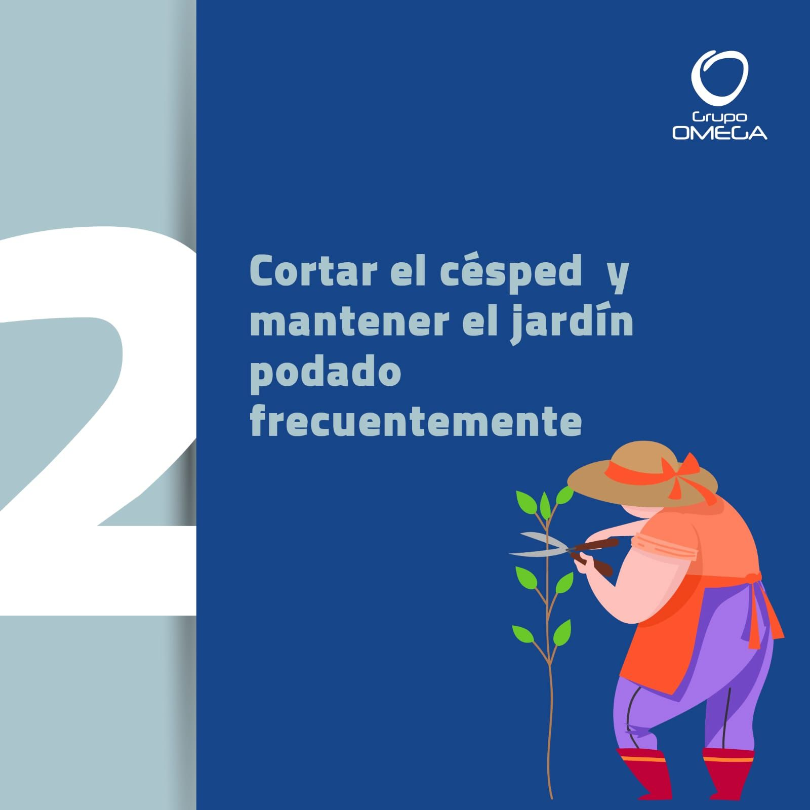
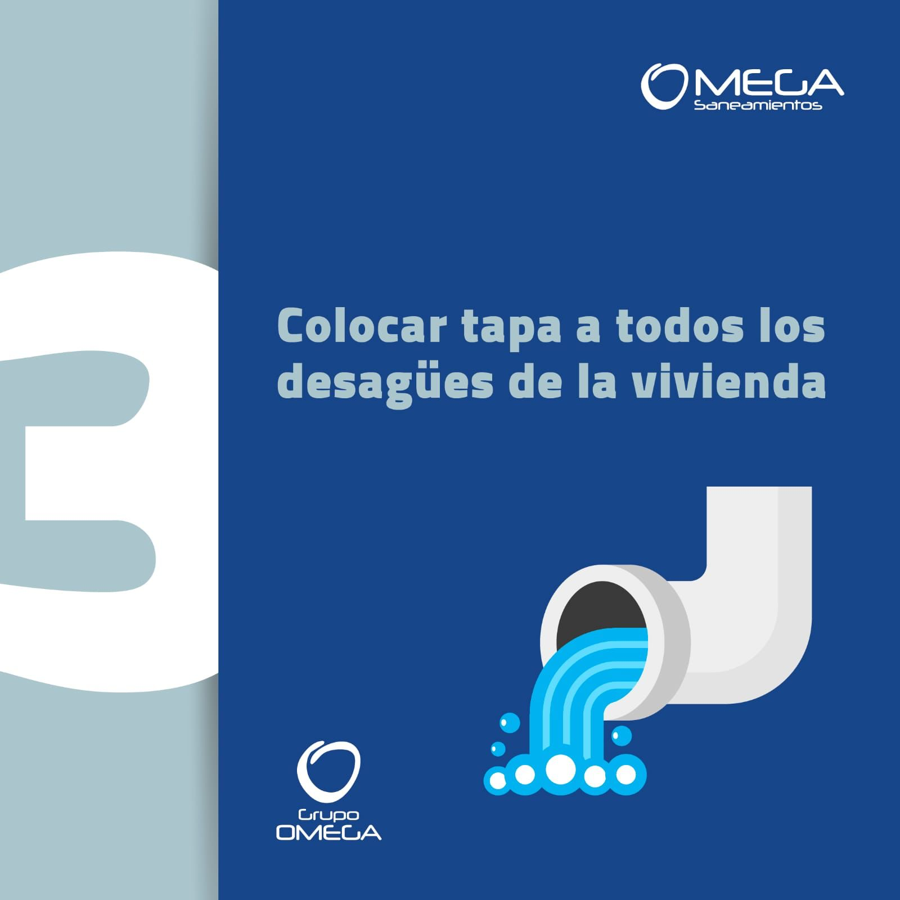
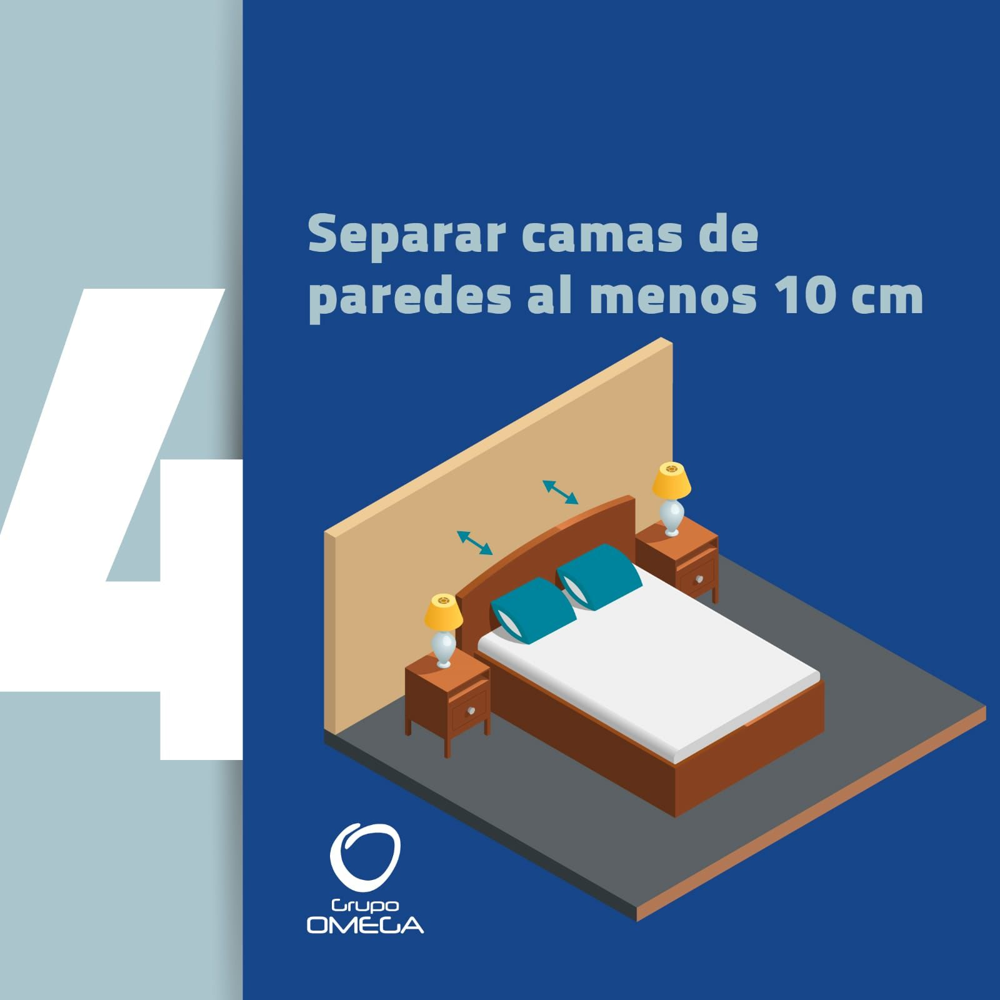
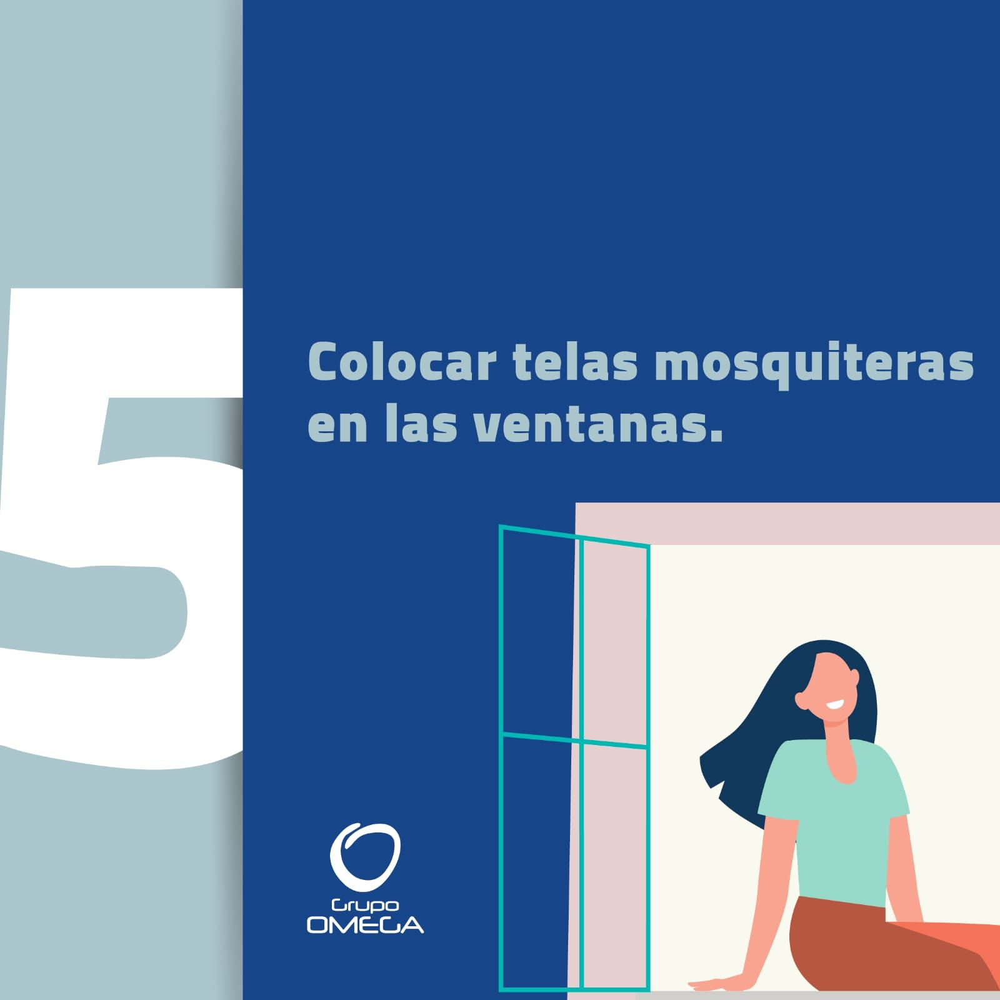
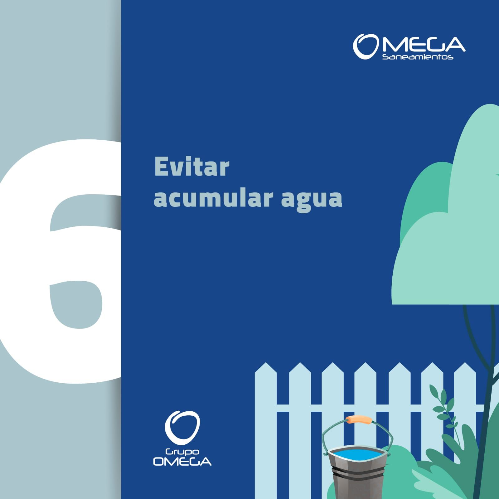

Omega Saneamientos

La limpieza diaria es clave para mantener tu hogar libre de plagas. ¡Prevení antes que combatir!

Un jardín limpio y bien podado ayuda a prevenir la aparición de plagas. ¡Mantenelo bajo control!

Tapar los desagües evita que las plagas entren al interior. ¡Protegé tu hogar!

Separar las camas de las paredes al menos 10 cm ayuda a evitar el acceso de plagas. ¡Este espacio hace la diferencia!

Instalar telas mosquiteras es una barrera efectiva contra insectos. ¡Cuidá tu hogar sin dejarles una entrada!

Evitá acumular agua en recipientes. Es el lugar ideal para que las plagas se reproduzcan.